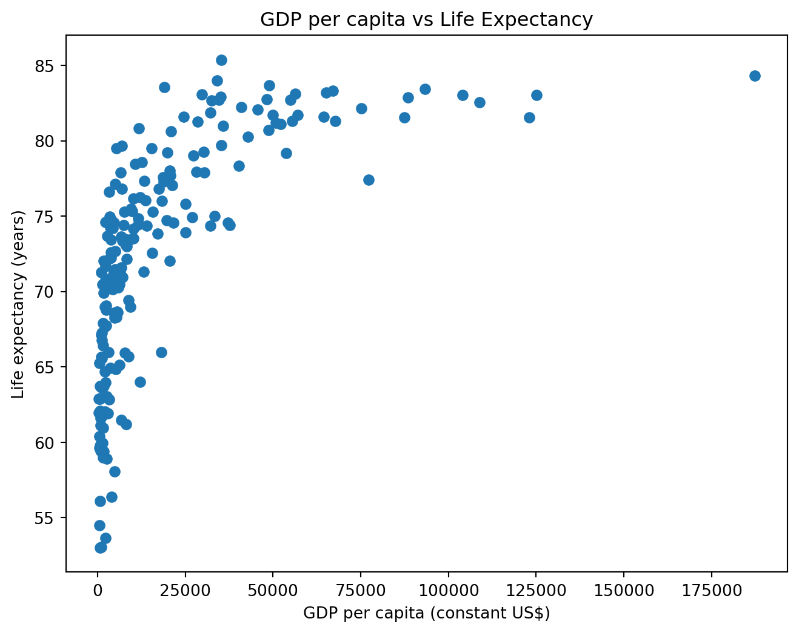
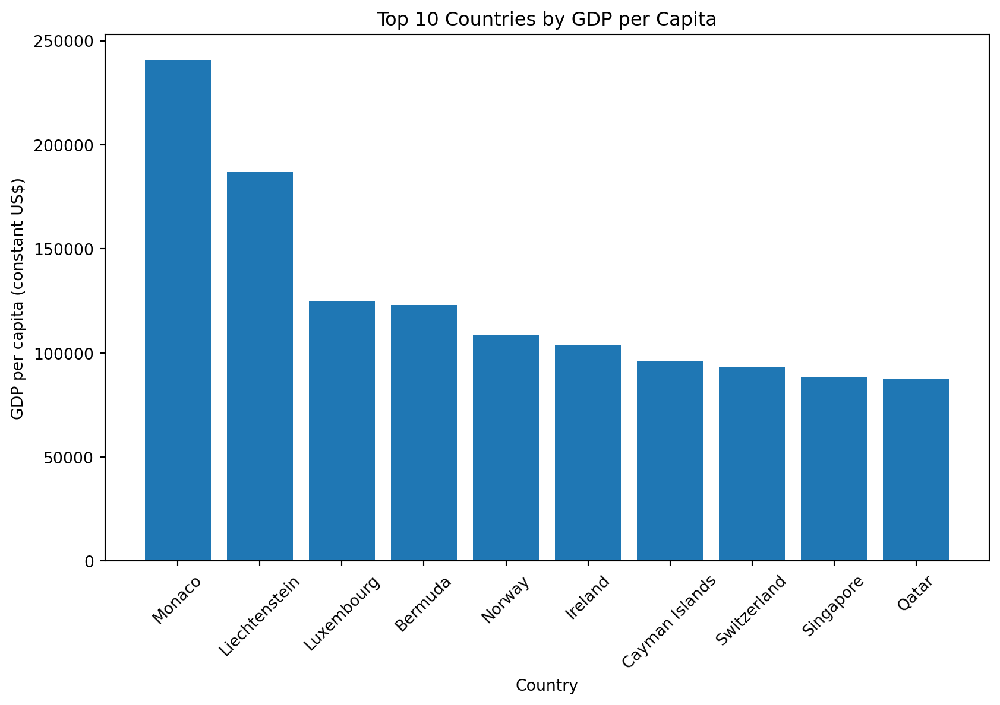

According to the World Bank [], the WDI dataset provides internationally comparable development indicators.
This report analyses a sample of the World Development Indicators (WDI) dataset for the year 2022. The dataset includes 14 variables across 217 countries. The goal is to conduct exploratory data analysis (EDA), create visualisations, and produce a reproducible report in both HTML and PDF formats.
2 Load Data
import pandas as pddf = pd.read_csv("wdi.csv")df.shapedf.head(5)
country
inflation_rate
exports_gdp_share
gdp_growth_rate
gdp_per_capita
adult_literacy_rate
primary_school_enrolment_rate
education_expenditure_gdp_share
measles_immunisation_rate
health_expenditure_gdp_share
income_inequality
unemployment_rate
life_expectancy
total_population
0
Afghanistan
NaN
18.380042
-6.240172
352.603733
NaN
NaN
NaN
68.0
NaN
NaN
14.100
62.879
41128771.0
1
Albania
6.725203
37.395422
4.856402
6810.114041
98.5
95.606712
2.74931
86.0
NaN
NaN
11.588
76.833
2777689.0
2
Algeria
9.265516
31.446856
3.600000
5023.252932
NaN
108.343933
NaN
79.0
NaN
NaN
12.437
77.129
44903225.0
3
American Samoa
NaN
46.957520
1.735016
19673.390102
NaN
NaN
NaN
NaN
NaN
NaN
NaN
NaN
44273.0
4
Andorra
NaN
NaN
9.563798
42350.697069
NaN
90.147346
2.66623
98.0
NaN
NaN
NaN
NaN
79824.0
3 Exploratory Data Analysis
This section explores five key indicators:
GDP per capita
Life expectancy
Inflation rate
Unemployment rate
Exports as a share of GDP
These indicators provide insight into economic performance, living standards, and macroeconomic conditions.
The summary statistics show variation across countries in GDP per capita, inflation, and unemployment. Some indicators contain missing values, which is expected in international datasets due to differences in data availability.
4 Visualisations
4.1 Relationship between GDP per capita and Life Expectancy

Figure 1: Relationship between GDP per capita and life expectancy (World Bank, 2022)
Figure Figure 1 shows a positive relationship between GDP per capita and life expectancy.
4.2 Top 10 Countries by GDP per Capita

Figure 2: Top 10 countries by GDP per capita (World Bank, 2022)
Figure Figure 2 displays the countries with the highest GDP per capita. # Summary Statistics Table
The key descriptive statistics for the selected indicators are shown in Table Table 1.
Table 1: Summary statistics of selected development indicators (World Bank, 2022)
gdp_per_capita
life_expectancy
inflation_rate
unemployment_rate
exports_gdp_share
count
203.000000
209.000000
169.000000
186.000000
169.000000
mean
20345.707649
72.416519
12.493936
7.268661
46.170395
std
31308.942225
7.713322
19.682433
5.827726
34.001404
min
259.025031
52.997000
-6.687321
0.130000
1.571162
25%
2570.563284
66.782000
5.518129
3.500750
24.526642
50%
7587.588173
73.514634
7.967574
5.537500
40.221277
75%
25982.630050
78.475000
11.665567
9.455250
55.460067
max
240862.182448
85.377000
171.205491
37.852000
211.278206
Table Table 1 shows variation across countries in economic and social indicators. GDP per capita and inflation show substantial variability, reflecting differences in economic development and macroeconomic stability across countries.